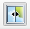
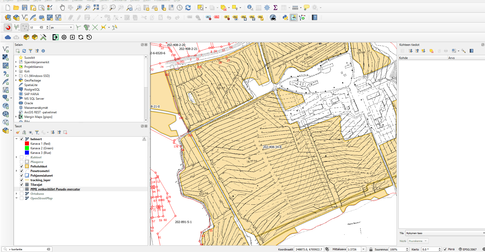

Salaojakarttojen georeferointi
Aineistojen valmistelu: Georeferoija lisäosan aktivointi
💡 HUOM!
Vaatii että projekti on ladattu QGIS-työpöytäohjelmistoon. Jos et ole tehnyt tätä vielä, noudata ohjeiden kohtaa: Projektin lataaminen tietokoneelle
Georefereroija-lisäosa voi vaatia aktivoinnin. Uusimmissa QGIS-versioissa (alkaen versiosta 3.28.) lisäosa pitäisi olla aktivoituna valmiiksi, mutta jos käytät vanhempaa versiota (3.22), niin QGIS vaatii sisäänrakennetun Georeferencer-lisäosan aktivoinnin georeferointia varten. Lisäosa aktivoidaan Lisäosat-valikon takaa löytyvän Hallitse ja asenna lisäosia/Manage and Install Plugins -toiminnon avulla. Tässä ohjeistuksessa oletetaan, että lisäosa on aktivoitu onnistuneesti.

Kuva 1. Uudemmissa QGIS-versioissa Georeferoija löytyy tasot-valikosta

Kuva 2. Vanhemmissa versioissa se löytyy Rasterit-valikosta.
Georeferoija-lisäosan toiminta
Huomaa, että jos sinulla on PDF-tiedosto, jonka haluat georeferoida, se tulee muuttaa ensin kuvaformaattiin (esim. .JPEG tai .PNG). Tämä onnistuu useimmilla PDF-lukuohjelmilla tai netissä saatavilla olevilla muuntimilla (Googleen "PDF to PNG converter").
Kun avaat Georeferencer-lisäosan, se avaa erillisen ikkunan, jossa georeferointi toteutetaan. Georeferencer-ikkunaan voidaan avata georeferoitava rasterikuva Avaa rasteri... -painikkeesta (kuva 3). Painikkeesta avautuu ikkuna, jonka avulla georeferoitavan kuvan voi valita koneen tiedostojärjestelmästä. Tuettuina on useita kymmeniä eri rasteriformaatteja aina perinteisistä JPEG- ja PNG-formaateista tehokkaisiin JPEG2000- ja ECW-formaatteihin.

Kuva 3. Georeferoitava rasteri avataan Georeferencer-ikkunaan Avaa rasteri -painikkeesta
Valitse rasteriksi aikaisemmin kuvatiedostoksi muunnettu salaojakartta. Kun haluttu kuva on valittu tiedostojärjestelmästä ja valinta vahvistettu Open-painikkeesta, avautuu käyttäjälle valittu rasteri näkyviin pienen latauksen jälkeen.
Vanhemmissa versioissa tässä kohtaa avautuu käyttäjälle Coordinate Reference System Selector -ikkuna. Tähän ikkunaan syötetään tieto siitä koordinaattijärjestelmästä, johon georeferoitava rasterikuva halutaan saattaa. Tässä esimerkissä käytettäväksi koordinaattijärjestelmäksi valitaan ETRS89-TM35FIN (EPSG:3067), mutta yhtä hyvin koordinaattijärjestelmäksi voidaan valita mikä tahansa QGISin tukema koordinaattijärjestelmä.
Tämän vaiheen jälkeen määritellään georeferoinnissa käytettävät asetukset. Tämä tapahtuu avaamalla Asetukset-valikosta Muunnoksen asetukset -ikkuna (kuva 4). Saman ikkunan saa avattua myös työkaluriviltä keltaisesta ratassymbolista.

Kuva 4. Georeferoinnin asetukset määritellään Asetukset-valikosta löytyvän Muunnoksen asetukset -painikkeen takaa
Muunnoksen asetukset -ikkunassa määritellään muunnoksessa käytettävät asetukset (kuva 5). Toteutettavan muunnoksen osalta (Kohta Muunnosparametrit) valittavissa on muunnoksen tyyppi, interpoloinnissa käytettävä menetelmä ja koordinaattijärjestelmä. Muunnoksessa syntyvän tiedoston osalta ikkunassa voidaan määritellä syntyvän tiedoston nimi, tallennussijainti sekä pakkausmenetelmä.
Tarkista, että muunnoksen tyyppi on Helmert, menetelmä Nearest Neighbour ja aseta koordinaattijärjestelmäksi EPSG:3067.
Valitse tulostiedosto kohtaan MerginMapsin-projekti kansio ja sen
sisältä kansio _rasters näin saat helpoiten synkronoitua
rasteritiedoston suoraan mobiilisovellukseen.
Muunnoksesta on mahdollista saada ulos myös kartta ja raportti (Raportit-kohta). Näiden tallennuspaikat määritellään tarvittaessa. Varmista myös, että ikkunan alareunasta löytyvä "Avaa tulosrasteri QGISissä kun valmis" -täppä on aktiivisena. Näin saat suoraan valmiin georeferoidun rasterin auki QGISin karttaikkunaan georeferoinnin jälkeen.
{kind=link}
Kuva 5. Muunnoksen asetukset -ikkuna halutuilla asetuksilla (Transformation Settings)
Kun muunnoksen asetukset on onnistuneesti määritelty, paina asetusikkunasta "OK".
Panosta vastinpisteisiin
Tässä vaiheessa kannattaa laittaa tarttuminen kohteisiin päälle, jotta vastinpisteiden kohdistaminen on helpompaa. Siirry ylävälilehdeltä --> Projekti --> Tarttumisen valinnat
{kind=link}
Klikkaa tämän jälkeen avautuvasta ikkunasta magneetti-ikonia niin tarttuminen on päällä kaikille tasoille.
{kind=link}
Tämän jälkeen voit sulkea ikkunan ruksista.
Nyt voidaan siirtyä määrittelemään vastinpisteitä. Homma lähtee liikkeelle valitsemalla työkaluriviltä löytyvä Add Point -työkalu (kuva 6). Ko. painikkeen vierestä oikealta löytyvät tarvittaessa painikkeet jo määriteltyjen vastinpisteiden poistamiseen ja muokkaamiseen. Lisää piste -painikkeen painaminen aktivoi työkalun, jolla osoitetaan georeferoitavalta kuvalta piste.
{kind=link}
Kuva 6: Georeferointi aloitetaan lisäämällä rasterukuvalle oikaisupisteitä
Kun Lisää piste -työkalulla on osoitettu piste georeferoitavalta kuvalta, avautuu Kirjoita karttakoordinaatit (Enter Map Coordinates) -ikkuna (kuva 7). Ikkunaan voi halutessaan syöttää koordinaattitiedot käsin, mutta huomattavasti kätevämpi tapa on poimia ne QGIS-paikkatietosovelluksen pääikkunasta painamalla "Karttaikkunasta"-painiketta.
Jos sinulla on käytössäsi useampi näyttö on vastinpisteiden merkkaaminen merkittävästi helpompaa. Mikäli tällaista järjestelyä ei ole käytettävissä (esim. operoitaessa pienellä kannettavan ruudulla), saat gereferoinnin ikkunan pienennettyä täppäämällä "Piilota goereferoinnin ikkuna automaattisesti" -kohta. Tällöin Georeferoija sukeltaa automaattisesti piiloon Karttaikkunasta -painiketta painettaessa.

Kuva 7: Oikaisupisteen tiedot annetaan Kirjoita karttakoordinaatit-ikkunassa
Kun pisteelle on koordinaatit (joko QGIS-pääikkunasta osoittaen tai käsin syöttämällä), nähdään kentissä X / Itä ja Y / Pohjoinen numeroarvoja (kuva 8). Tässä esimerkissä käytetään ETRS89-TM35FIN-koordinaattijärjestelmää (EPSG:3067), jonka koordinaatit ovat kuvassa. Vaihtoehtoisesti voit valita alasvetovalikosta toisen käytettävän koordinaattijärjestelmän (valittava siis samaksi kuin pääkanvaasi näkymässä)
Onnistunut ja laadukas georeferointi vaatii useiden vastinpisteiden määrittelyn. Kuten aiemmin todettiin, vastinpisteiksi kannattaa valita esimerkiksi rakennusten kulmia, kiinteistörajoja ja muita helposti ja yksiselitteisesti tukiaineistosta tulkittavia kohteita. Vastinpisteet kannattaa lisäksi pyrkiä osoittamaan huolellisesti ja tarkasti sekä eri puolille georeferoitavaa kuvaa.
Tarkkuus korostuu etenkin silloin, kun vastinpisteitä osoitetaan ainoastaan muutamia. Mitä enemmän vastinpisteitä voidaan osoittaa, sen pienempi on yksittäisestä pisteestä aiheutuva vaikutus muunnokseen.
Kun vastinpisteen tiedot ovat Kirjoita karttakoordinaatit -ikkunassa ja oikea koordinaattijärjestelmä valittu, voidaan vastinpiste tallentaa painamalla OK-painiketta. Tällöin vastinpiste tallentuu ns. vastinpistetauluun (GCP-taulu) ja ikkuna sulkeutuu. Uuden pisteet saa lisättyä Lisää piste -painikkeesta.

Kuva 8: Oikaisupisteen tiedot syötetty
{kind=link}

Kuva 9: Jos haluat poistaa jonkun vastinpisteen, voit sen tehdä Poista piste -työkalulla. Aktivoi työkalu ja klikkaa sillä georeferointi-ikkunassa näkyvää pientä punaista pistettä (vastinpiste).

Kuva 10: Poistaminen voidaan tehdä myös muunnospistetaulussa klikkaamalla haluttua riviä hiiren oikealla ja valitsemalla "Poista".
Vastinpisteiden tarkastelu ja varsinainen georeferointi
Kun tarvittava määrä vastinpisteitä on syötetty, voidaan niitä tarkastella vastinpistetaulun (GCP-taulu) avulla. Mikäli vastinpistetaulu ei näy automaattisesti Georeferencer-ikkunassa ns. paneelina, voidaan se avata Näytä-valikosta löytyvän Paneelit-valikon alta (kuva 11).

Kuva 11: Syötettyjä oikaisupisteitä ja niiden vastinpisteitä voi tarkastella CGP-taulusta
Vastinpistetaulussa on nähtävillä kaikki osoitetut vastinpisteet (kuva 10). Tässä esimerkissä on määritelty kymmenen vastinpistettä. Jokaisella vastinpisteelle esitetään taulussa sijainti georeferoitavalla kuvalla (Lähtö X ja Lähtö Y) ja sijainti tukiaineistossa (Kohde. X ja Kohde. Y).
Näiden tietojen lisäksi jokaiselle pisteelle lasketaan virhe X- ja Y-suunnassa. X- ja Y-suuntaisten virhelukujen lisäksi jokaiselle pisteelle on laskettu residuaali, joka kuvaa ko. pisteen kokonaisvirhettä. Ideaalitilanteessa residuaaliarvo olisi mahdollisimman lähellä nollaa.
Huomaa, että virhearvot esitetään pikseleinä. Mikäli jokin vastinpiste eroaa virhearvojen (Residuals/Residuaalit) osalta muista, kannattaa se poistaa ja määritellä uudelleen. Tässä esimerkissä olevat pisteet näyttäisivät olevan hyvin linjassa toistensa kanssa eikä selkeitä poikkeamia esiinny. Voidaan siis edetä hyvillä mielin viimeiseen vaiheeseen, jossa itse georeferointi toteutetaan.

Kuva 12: GCP-taulussa nähdään kaikki syötetyt vastinpisteet.
Kun tarvittava määrä vastinpisteitä on määritelty ja ne on todettu hyviksi vastinpistetaulua tarkastelemalla, voidaan käynnistää varsinainen georeferointi. Tämä tapahtuu Georeferencer-ikkunan Start Georeferencing -painikkeesta (kuva 13).

Kuva 13: Georeferointi käynnistetään Start Georeferencing-painikkeesta.
Mikäli Muunnoksen asetukset (Transformation Settings) -ikkunassa on laitettu täppä kohtaan "Load in QGIS when done", avautuu georeferoitu kuva automaattisesti QGISiin georeferoinnin jälkeen. Mikäli täppää ei ole laitettu, voi kuvan lisätä myös manuaalisesti Open Data Source Manager -toiminnon kautta.
Vaihda valkoinen väri läpinäkyväksi
Avaa juuri luodun georeferoidun tason ominaisuudet klikkaamalla tasoa hiiren oikealla --> Ominaisuudet --> Läpinäkyvyys
Aseta valkoinen väri (RGB 255,255,255) läpinäkyväksi ja klikkaa lopuksi "OK"
{kind=link}
Lataa QGIS-lisäosa MapSwipe Tool
Kätevä työkalu kahden tason vertaamiseen on QGISin lisäosa MapSwipe Tool. Tällä lisäosalla voit verrata kahden tason näkymää olipa tason formaatti mikä tahansa.
Asentamisen jälkeen ylätyökalu-palkkiin pitäisi ilmestyä seuraava ikoni .
{kind=link}
Klikkaa ikonia ja sen jälkeen voit joko vaakatasossa tai pystytasossa "swaippailla". Suunta määräytyy sen mukaan mikä on hiiren suunta.
Kun olet tyytyväinen lopputulokseen niin synkronoi nämä muutokset projektiisi painamalla MerginMaps-lisäosan "Synchronize Mergin Maps project"
{kind=link}
{kind=link}
Tämän jälkeen salaojarkartta näkyy MerginMaps-mobiilisovelluksessa: